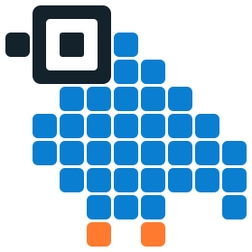

doveDove forgets the wallet and server on this computer. Link it again from your signer; your coins stay where they are.
Welcome to Dove
Dove shows your balance and builds payments. Your signer approves them, and your keys never leave it.
You'll need
- Goldfish, with your seed loaded
- A webcam on this computer
How many signers?
Pick the kind of wallet your signers hold.
Pick a server
Dove asks a server about your wallet's transactions.
Using Tor with an Electrum server? Enter socks5://127.0.0.1:9050.

Link your signer
Dove watches your wallet and builds transactions. Your keys stay on your signer.
- Open the wallet QR on your signer.
- Tap Scan QR and hold it up to this computer's camera.
On Goldfish, it's in Wallet options, under Connect wallet.
Paste your signer's key
On Goldfish, tap the QR under Connect wallet to see the key as text.
Multisig wallet
Paste the wallet's descriptor, or each cosigner's key on its own line.
You'll find Goldfish's key in Wallet options, under Connect wallet.
Balance
₿0
Receive
Scan it with Goldfish to verify it's yours
Send
Connect your signers
Scan this with Goldfish, then tap Use wallet if the details match.
Speed up
Sends the same payment again with a higher fee. It replaces the pending one, so only one of them can confirm.
- Transaction
- Pays now
Settings
Goldfish firmware
Put the newest Goldfish firmware on your signer from this computer.
This wallet
Dove remembers it on this computer, so you don't have to link it again.
Update Goldfish
Get the newest firmware
Dove downloads it from GitHub and checks it against the release's SHA256SUMS. Nothing goes to GitHub until you tap Check for update.
- Newest
- SHA-256
Goldfish shows its version in the top-right corner of its home screen. Same one? You're up to date.
Put Goldfish in update mode
- Plug Goldfish into this computer with a USB cable.
- On its home screen, tap the version in the top-right corner.
- Tap Restart. Goldfish shows up here as a drive called RP2350.
Copied
Review
You're sending
Scan with Goldfish ·
Signed
Nothing is sent until you broadcast. Later keeps it here until you close the app.
- Transaction
Sent
It's on its way, and confirms once a miner puts it in a block.
- Transaction